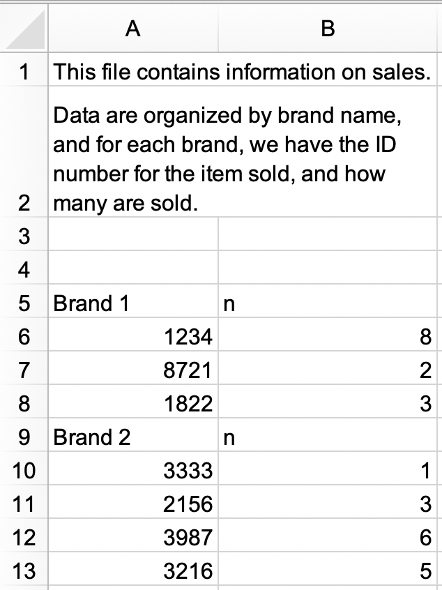

20 Υπολογιστικά φύλλα
20.1 Εισαγωγή
Στο Κεφάλαιο 7 μάθατε για την εισαγωγή δεδομένων από αρχεία απλού κειμένου, όπως .csv και .tsv. Τώρα ήρθε η ώρα να μάθετε πώς να εξάγετε δεδομένα από ένα υπολογιστικό φύλλο, είτε από Excel, είτε από Google Sheet. Θα βασιστούμε σε πολλά από αυτά που έχετε μάθει στο Κεφάλαιο 7, θα συζητήσουμε όμως πρόσθετες οπτικές και δυσκολίες κατά την εργασία σας με δεδομένα από υπολογιστικά φύλλα.
Εάν εσείς ή οι συνεργάτες σας χρησιμοποιείτε υπολογιστικά φύλλα για την οργάνωση δεδομένων, συνιστούμε ανεπιφύλακτα να διαβάσετε τη δημοσίευση “Data Organization in Spreadsheets” των Karl Broman και Kara Woo: https://doi.org/10.1080/00031305.2017.1375989. Οι βέλτιστες πρακτικές που παρουσιάζονται θα σας γλυτώσουν από αρκετούς πονοκεφάλους καθώς εισάγετε δεδομένα από ένα υπολογιστικό φύλλο στην R για αναλύσετε και να οπτικοποιήσετε.
20.2 Excel
Το Microsoft Excel είναι ένα ευρέως χρησιμοποιούμενο πρόγραμμα λογισμικού υπολογιστικών φύλλων, όπου τα δεδομένα οργανώνονται σε φύλλα εργασίας μέσα σε αρχεία υπολογιστικών φύλλων.
20.2.1 Προαπαιτούμενα
Σε αυτήν την ενότητα, θα μάθετε πώς να φορτώνετε δεδομένα από υπολογιστικά φύλλα Excel στην R με το πακέτο readxl. Αυτό το πακέτο δεν είναι βασικό στο tidyverse, επομένως πρέπει να το φορτώσετε ξεχωριστά. Εγκαθίσταται όμως αυτόματα όταν εγκαθιστάτε το tidyverse. Αργότερα, θα χρησιμοποιήσουμε επίσης το πακέτο writexl, το οποίο μας επιτρέπει να δημιουργήσουμε υπολογιστικά φύλλα Excel.
20.2.2 Ξεκινώντας
Οι περισσότερες από τις λειτουργίες του πακέτου readxl σας επιτρέπουν να φορτώνετε υπολογιστικά φύλλα Excel στην R:
- Η
read_xls()διαβάζει αρχεία Excel με μορφήxls. - Η
read_xlsx()διαβάζει αρχεία Excel με μορφήxlsx. - Η
read_excel()μπορεί να διαβάζει αρχεία τόσο με τη μορφήxlsαλλά καιxlsx. Αυτό γίνεται μαντεύοντας τον τύπο του αρχείου με βάση την είσοδο.
Αυτές οι συναρτήσεις έχουν παρόμοια σύνταξη όπως και άλλες συναρτήσεις για τις οποίες έχουμε μιλήσει προηγουμένως για την ανάγνωση άλλων τύπων αρχείων, π.χ., read_csv(), read_table() κ.λπ. Για το υπόλοιπο του κεφαλαίου θα επικεντρωθούμε στη χρήση της read_excel().
20.2.3 Διαβάζοντας υπολογιστικά φύλλα Excel
Το Σχήμα 20.1 δείχνει πώς φαίνεται στο Excel το υπολογιστικό φύλλο που θα διαβάσουμε στην R. Μπορείτε να το κατεβάσετε ως αρχείο Excel από το https://docs.google.com/spreadsheets/d/1V1nPp1tzOuutXFLb3G9Eyxi3qxeEhnOXUzL5_BcCQ0w/.

Το πρώτο όρισμα της read_excel() είναι το μονοπάτι του αρχείου προς ανάγνωση.
students <- read_excel("data/students.xlsx")Η read_excel() θα διαβάσει το αρχείο ως tibble.
students
#> # A tibble: 6 × 5
#> `Student ID` `Full Name` favourite.food mealPlan AGE
#> <dbl> <chr> <chr> <chr> <chr>
#> 1 1 Sunil Huffmann Strawberry yoghurt Lunch only 4
#> 2 2 Barclay Lynn French fries Lunch only 5
#> 3 3 Jayendra Lyne N/A Breakfast and lunch 7
#> 4 4 Leon Rossini Anchovies Lunch only <NA>
#> 5 5 Chidiegwu Dunkel Pizza Breakfast and lunch five
#> 6 6 Güvenç Attila Ice cream Lunch only 6Έχουμε έξι μαθητές στα δεδομένα και πέντε μεταβλητές για κάθε μαθητή. Ωστόσο, υπάρχουν μερικά πράγματα που ίσως θέλουμε να αντιμετωπίσουμε σε αυτό το σύνολο δεδομένων:
-
Τα ονόματα των στηλών δεν είναι ορισμένα με συνέπεια. Μπορείτε να παρέχετε ονόματα στηλών που ακολουθούν μία συνεπή μορφή. Συνιστούμε τη μορφή
snake_caseχρησιμοποιώντας το όρισμαcol_names.read_excel( "data/students.xlsx", col_names = c("student_id", "full_name", "favourite_food", "meal_plan", "age") ) #> # A tibble: 7 × 5 #> student_id full_name favourite_food meal_plan age #> <chr> <chr> <chr> <chr> <chr> #> 1 Student ID Full Name favourite.food mealPlan AGE #> 2 1 Sunil Huffmann Strawberry yoghurt Lunch only 4 #> 3 2 Barclay Lynn French fries Lunch only 5 #> 4 3 Jayendra Lyne N/A Breakfast and lunch 7 #> 5 4 Leon Rossini Anchovies Lunch only <NA> #> 6 5 Chidiegwu Dunkel Pizza Breakfast and lunch five #> 7 6 Güvenç Attila Ice cream Lunch only 6Δυστυχώς, αυτό δεν δούλεψε πολύ καλά. Τώρα, έχουμε τα ονόματα των μεταβλητών που θέλουμε, αλλά αυτό που προηγουμένως ήταν η γραμμή με τα ονόματα των στηλών, τώρα εμφανίζεται ως η πρώτη παρατήρηση στα δεδομένα. Μπορείτε να παραλείψετε αυτή τη γραμμή χρησιμοποιώντας το όρισμα
skip.read_excel( "data/students.xlsx", col_names = c("student_id", "full_name", "favourite_food", "meal_plan", "age"), skip = 1 ) #> # A tibble: 6 × 5 #> student_id full_name favourite_food meal_plan age #> <dbl> <chr> <chr> <chr> <chr> #> 1 1 Sunil Huffmann Strawberry yoghurt Lunch only 4 #> 2 2 Barclay Lynn French fries Lunch only 5 #> 3 3 Jayendra Lyne N/A Breakfast and lunch 7 #> 4 4 Leon Rossini Anchovies Lunch only <NA> #> 5 5 Chidiegwu Dunkel Pizza Breakfast and lunch five #> 6 6 Güvenç Attila Ice cream Lunch only 6 -
Στη στήλη
favourite_food, μία από τις παρατηρήσεις είναιN/A, το οποίο σημαίνει “μη διαθέσιμο (not available)”, αλλά επί του παρόντος δεν αναγνωρίζεται ως τιμήΝΑ(σημειώστε την αντίθεση μεταξύ τουN/Aκαι της ηλικίας του τέταρτου μαθητή στη λίστα). Μπορείτε να καθορίσετε ποιες τιμές χαρακτήρων θα αναγνωρίζονται ωςNAμε το όρισμαna. Από προεπιλογή, μόνο το""(κενή συμβολοσειρά ή, στην περίπτωση ανάγνωσης από υπολογιστικό φύλλο, ένα κενό κελί, ή ένα κελί με τον τύπο=NA()) αναγνωρίζεται ωςNA.read_excel( "data/students.xlsx", col_names = c("student_id", "full_name", "favourite_food", "meal_plan", "age"), skip = 1, na = c("", "N/A") ) #> # A tibble: 6 × 5 #> student_id full_name favourite_food meal_plan age #> <dbl> <chr> <chr> <chr> <chr> #> 1 1 Sunil Huffmann Strawberry yoghurt Lunch only 4 #> 2 2 Barclay Lynn French fries Lunch only 5 #> 3 3 Jayendra Lyne <NA> Breakfast and lunch 7 #> 4 4 Leon Rossini Anchovies Lunch only <NA> #> 5 5 Chidiegwu Dunkel Pizza Breakfast and lunch five #> 6 6 Güvenç Attila Ice cream Lunch only 6 -
Ένα άλλο ζήτημα που απομένει είναι ότι η στήλη
ageδιαβάζεται ως μεταβλητή χαρακτήρων, αλλά στην πραγματικότητα θα έπρεπε να είναι αριθμητική. Ακριβώς όπως με τηread_csv()και τις παρόμοιες συναρτήσεις για ανάγνωση δεδομένων από flat αρχεία, μπορείτε να παρέχετε το όρισμαcol_typesστηread_excel()και να καθορίσετε τους τύπους των στηλών για τις μεταβλητές που διαβάζετε. Ωστόσο, η σύνταξη είναι λίγο διαφορετική. Οι επιλογές σας είναιskip","guess","logical","numeric","date","text"ή"list".read_excel( "data/students.xlsx", col_names = c("student_id", "full_name", "favourite_food", "meal_plan", "age"), skip = 1, na = c("", "N/A"), col_types = c("numeric", "text", "text", "text", "numeric") ) #> Warning: Expecting numeric in E6 / R6C5: got 'five' #> # A tibble: 6 × 5 #> student_id full_name favourite_food meal_plan age #> <dbl> <chr> <chr> <chr> <dbl> #> 1 1 Sunil Huffmann Strawberry yoghurt Lunch only 4 #> 2 2 Barclay Lynn French fries Lunch only 5 #> 3 3 Jayendra Lyne <NA> Breakfast and lunch 7 #> 4 4 Leon Rossini Anchovies Lunch only NA #> 5 5 Chidiegwu Dunkel Pizza Breakfast and lunch NA #> 6 6 Güvenç Attila Ice cream Lunch only 6Ωστόσο, ούτε και αυτό έφερε το επιθυμητό αποτέλεσμα. Καθορίζοντας ότι η στήλη
ageπρέπει να είναι αριθμητική, έχουμε μετατρέψει το ένα κελί με τη μη αριθμητική καταχώρηση (που είχε την τιμήfive) σεNA. Σε αυτήν την περίπτωση, θα πρέπει να διαβάσουμε την ηλικία ως κείμενο ("text") και στη συνέχεια να κάνουμε την αλλαγή μόλις τα δεδομένα φορτωθούν στην R.students <- read_excel( "data/students.xlsx", col_names = c("student_id", "full_name", "favourite_food", "meal_plan", "age"), skip = 1, na = c("", "N/A"), col_types = c("numeric", "text", "text", "text", "text") ) students <- students |> mutate( age = if_else(age == "five", "5", age), age = parse_number(age) ) students #> # A tibble: 6 × 5 #> student_id full_name favourite_food meal_plan age #> <dbl> <chr> <chr> <chr> <dbl> #> 1 1 Sunil Huffmann Strawberry yoghurt Lunch only 4 #> 2 2 Barclay Lynn French fries Lunch only 5 #> 3 3 Jayendra Lyne <NA> Breakfast and lunch 7 #> 4 4 Leon Rossini Anchovies Lunch only NA #> 5 5 Chidiegwu Dunkel Pizza Breakfast and lunch 5 #> 6 6 Güvenç Attila Ice cream Lunch only 6
Μας χρειάστηκαν πολλά βήματα και δοκιμές για να φορτώσουμε τα δεδομένα ακριβώς στη μορφή που θέλουμε, και αυτό δεν είναι απροσδόκητο. Η επιστήμη των δεδομένων είναι μία επαναληπτική διαδικασία, και η διαδικασία της επανάληψης μπορεί να είναι ακόμη πιο κουραστική κατά την ανάγνωση δεδομένων από υπολογιστικά φύλλα σε σύγκριση με άλλα αρχεία απλού κειμένου, ή αρχεία δεδομένων σε μορφή πίνακα, επειδή οι άνθρωποι τείνουν να εισάγουν δεδομένα σε υπολογιστικά φύλλα, και να τα χρησιμοποιούν όχι μόνο για αποθήκευση, αλλά και για κοινή χρήση και επικοινωνία.
Δεν υπάρχει τρόπος να γνωρίζετε ακριβώς πώς θα είναι τα δεδομένα μέχρι να τα φορτώσετε και να τα δείτε. Βασικά, στην πραγματικότητα, υπάρχει. Μπορείτε να ρίξετε μία ματιά ανοίγοντας το αρχείο στο Excel. Εάν πρόκειται να το κάνετε, συνιστούμε να δημιουργήσετε ένα αντίγραφο του αρχείου Excel για να το ανοίξετε και να περιηγηθείτε διαδραστικά και να αφήσετε ως έχει το αρχικό αρχείο που θα διαβάσετε στην R. Αυτό θα διασφαλίσει ότι δεν θα αντικαταστήσετε κατά λάθος κάτι μέσα στο υπολογιστικό φύλλο όσο το εξερευνείτε. Επίσης, δεν πρέπει να φοβάστε να κάνετε αυτό που κάναμε εδώ: φορτώστε τα δεδομένα, ρίξτε μία ματιά, κάντε προσαρμογές στον κώδικά σας, φορτώστε το αρχείο ξανά και επαναλάβετε μέχρι να είστε ευχαριστημένοι με το αποτέλεσμα.
20.2.4 Διαβάζοντας φύλλα εργασίας
Ένα σημαντικό χαρακτηριστικό που ξεχωρίζει τα υπολογιστικά φύλλα από τα flat αρχεία είναι η έννοια των πολλαπλών φύλλων, που ονομάζονται φύλλα εργασίας. Το Σχήμα 20.2 εμφανίζει ένα υπολογιστικό φύλλο Excel με πολλά φύλλα εργασίας. Τα δεδομένα προέρχονται από το πακέτο palmerpenguins ενώ μπορείτε να κατεβάσετε το υπολογιστικό φύλλο ως αρχείο Excel από το https://docs.google.com/spreadsheets/d/1aFu8lnD_g0yjF5O-K6SFgSEWiHPpgvFCF0NY9D6LXnY/. Κάθε φύλλο εργασίας περιέχει πληροφορίες για πιγκουίνους από διαφορετικά νησιά.

Μπορείτε να διαβάσετε ένα μεμονωμένο φύλλο εργασίας από ένα υπολογιστικό φύλλο με το όρισμα sheet στη read_excel(). Η προεπιλογή, στην οποία βασιζόμασταν μέχρι τώρα, είναι το πρώτο φύλλο.
read_excel("data/penguins.xlsx", sheet = "Torgersen Island")
#> # A tibble: 52 × 8
#> species island bill_length_mm bill_depth_mm flipper_length_mm
#> <chr> <chr> <chr> <chr> <chr>
#> 1 Adelie Torgersen 39.1 18.7 181
#> 2 Adelie Torgersen 39.5 17.399999999999999 186
#> 3 Adelie Torgersen 40.299999999999997 18 195
#> 4 Adelie Torgersen NA NA NA
#> 5 Adelie Torgersen 36.700000000000003 19.3 193
#> 6 Adelie Torgersen 39.299999999999997 20.6 190
#> # ℹ 46 more rows
#> # ℹ 3 more variables: body_mass_g <chr>, sex <chr>, year <dbl>Ορισμένες μεταβλητές που φαίνεται να περιέχουν αριθμητικά δεδομένα διαβάζονται ως χαρακτήρες λόγω του ότι η συμβολοσειρά χαρακτήρων "NA" δεν αναγνωρίζεται ως πραγματικό NA.
penguins_torgersen <- read_excel("data/penguins.xlsx", sheet = "Torgersen Island", na = "NA")
penguins_torgersen
#> # A tibble: 52 × 8
#> species island bill_length_mm bill_depth_mm flipper_length_mm
#> <chr> <chr> <dbl> <dbl> <dbl>
#> 1 Adelie Torgersen 39.1 18.7 181
#> 2 Adelie Torgersen 39.5 17.4 186
#> 3 Adelie Torgersen 40.3 18 195
#> 4 Adelie Torgersen NA NA NA
#> 5 Adelie Torgersen 36.7 19.3 193
#> 6 Adelie Torgersen 39.3 20.6 190
#> # ℹ 46 more rows
#> # ℹ 3 more variables: body_mass_g <dbl>, sex <chr>, year <dbl>Εναλλακτικά, μπορείτε να χρησιμοποιήσετε την excel_sheets() για να πάρετε πληροφορίες για όλα τα φύλλα εργασίας σε ένα υπολογιστικό φύλλο Excel και, στη συνέχεια, να διαβάσετε μόνο αυτά που σας ενδιαφέρουν.
excel_sheets("data/penguins.xlsx")
#> [1] "Torgersen Island" "Biscoe Island" "Dream Island"Εάν γνωρίζετε τα ονόματα των φύλλων εργασίας, μπορείτε να τα διαβάσετε μεμονωμένα με τη read_excel().
penguins_biscoe <- read_excel("data/penguins.xlsx", sheet = "Biscoe Island", na = "NA")
penguins_dream <- read_excel("data/penguins.xlsx", sheet = "Dream Island", na = "NA")Σε αυτήν την περίπτωση, το πλήρες σύνολο δεδομένων penguins κατανέμεται σε τρία φύλλα εργασίας μέσα στο υπολογιστικό φύλλο. Κάθε φύλλο εργασίας έχει τον ίδιο αριθμό στηλών αλλά διαφορετικό αριθμό σειρών.
Μπορούμε να τα ενώσουμε με την bind_rows().
penguins <- bind_rows(penguins_torgersen, penguins_biscoe, penguins_dream)
penguins
#> # A tibble: 344 × 8
#> species island bill_length_mm bill_depth_mm flipper_length_mm
#> <chr> <chr> <dbl> <dbl> <dbl>
#> 1 Adelie Torgersen 39.1 18.7 181
#> 2 Adelie Torgersen 39.5 17.4 186
#> 3 Adelie Torgersen 40.3 18 195
#> 4 Adelie Torgersen NA NA NA
#> 5 Adelie Torgersen 36.7 19.3 193
#> 6 Adelie Torgersen 39.3 20.6 190
#> # ℹ 338 more rows
#> # ℹ 3 more variables: body_mass_g <dbl>, sex <chr>, year <dbl>Στο Κεφάλαιο 26 θα μιλήσουμε για τρόπους εκτέλεσης αυτού του είδους εργασίας χωρίς επαναλαμβανόμενο κώδικα.
20.2.5 Διαβάζοντας μέρος ενός φύλλου
Δεδομένου ότι πολλοί χρησιμοποιούν υπολογιστικά φύλλα Excel για παρουσίαση καθώς και για αποθήκευση δεδομένων, είναι πολύ συνηθισμένο να βρίσκουμε καταχωρήσεις κελιών σε ένα υπολογιστικό φύλλο που δεν αποτελούν μέρος των δεδομένων που θέλετε να διαβάσετε στην R. Το Σχήμα 20.3 δείχνει ένα τέτοιο υπολογιστικό φύλλο: στη μέση του φύλλου υπάρχει κάτι που μοιάζει με πλαίσιο δεδομένων. Υπάρχει όμως εξωτερικό κείμενο στα κελιά πάνω και κάτω από τα δεδομένα.
![Μία ματιά στο υπολογιστικό φύλλο deaths στο Excel. Το υπολογιστικό φύλλο έχει τέσσερις γραμμές στην κορυφή που περιέχουν πληροφορίες χωρίς δεδομένα. Το κείμενο 'For the same of consistency in the data layout, which is really a beautiful thing, I will keep making notes up here.' κατανέμεται σε κελιά σε αυτές τις τέσσερις κορυφαίες γραμμές. Στη συνέχεια, υπάρχει ένα πλαίσιο δεδομένων που περιλαμβάνει πληροφορίες για τους θανάτους 10 διάσημων ανθρώπων, συμπεριλαμβανομένων των ονομάτων, των επαγγελμάτων, των ηλικιών τους, αν έχουν παιδιά ή όχι, την ημερομηνία γέννησης και θανάτου. Στο κάτω μέρος, υπάρχουν τέσσερις ακόμη γραμμές με πληροφορίες χωρίς δεδομένα. Το κείμενο "This has been really fun, but we're signing off now!' κατανέμεται σε κελιά σε αυτές τις τέσσερις κάτω γραμμές.](screenshots/import-spreadsheets-deaths.png)
Αυτό το υπολογιστικό φύλλο είναι ένα από τα παραδείγματα που παρέχονται στο πακέτο readxl. Μπορείτε να χρησιμοποιήσετε τη συνάρτηση readxl_example() για να εντοπίσετε το υπολογιστικό φύλλο στο σύστημά σας στον κατάλογο όπου είναι εγκατεστημένο το πακέτο. Αυτή η συνάρτηση επιστρέφει το μονοπάτι προς το υπολογιστικό φύλλο, το οποίο μπορείτε να χρησιμοποιήσετε στην read_excel() ως συνήθως.
deaths_path <- readxl_example("deaths.xlsx")
deaths <- read_excel(deaths_path)
#> New names:
#> • `` -> `...2`
#> • `` -> `...3`
#> • `` -> `...4`
#> • `` -> `...5`
#> • `` -> `...6`
deaths
#> # A tibble: 18 × 6
#> `Lots of people` ...2 ...3 ...4 ...5 ...6
#> <chr> <chr> <chr> <chr> <chr> <chr>
#> 1 simply cannot resi… <NA> <NA> <NA> <NA> some notes
#> 2 at the top <NA> of their spreadsh…
#> 3 or merging <NA> <NA> <NA> cells
#> 4 Name Profession Age Has kids Date of birth Date of death
#> 5 David Bowie musician 69 TRUE 17175 42379
#> 6 Carrie Fisher actor 60 TRUE 20749 42731
#> # ℹ 12 more rowsΟι τρεις επάνω γραμμές και οι τέσσερις κάτω γραμμές δεν αποτελούν μέρος του πλαισίου δεδομένων. Οι εξωτερικές γραμμές μπορούν να αποφευχθούν χρησιμοποιώντας τα ορίσματα skip και n_max, συνιστούμε όμως τη χρήση εύρους κελιών. Στο Excel, το επάνω αριστερό κελί είναι το A1. Καθώς μετακινείστε στις στήλες προς τα δεξιά, η ετικέτα του κελιού μετακινείται προς τα κάτω στο αλφάβητο, δηλαδή B1, C1, κ.λπ. Και καθώς μετακινείστε προς τα κάτω σε μία στήλη, ο αριθμός στην ετικέτα του κελιού αυξάνεται, για παράδειγμα A2, A3 κ.λπ.
Εδώ τα δεδομένα που θέλουμε να διαβάσουμε ξεκινούν στο κελί A5 και τελειώνουν στο κελί F15. Σε όρους υπολογιστικών φύλλων, αυτό μεταφράζεται σε A5:F1, το οποίο και παρέχουμε στο όρισμα range:
read_excel(deaths_path, range = "A5:F15")
#> # A tibble: 10 × 6
#> Name Profession Age `Has kids` `Date of birth`
#> <chr> <chr> <dbl> <lgl> <dttm>
#> 1 David Bowie musician 69 TRUE 1947-01-08 00:00:00
#> 2 Carrie Fisher actor 60 TRUE 1956-10-21 00:00:00
#> 3 Chuck Berry musician 90 TRUE 1926-10-18 00:00:00
#> 4 Bill Paxton actor 61 TRUE 1955-05-17 00:00:00
#> 5 Prince musician 57 TRUE 1958-06-07 00:00:00
#> 6 Alan Rickman actor 69 FALSE 1946-02-21 00:00:00
#> # ℹ 4 more rows
#> # ℹ 1 more variable: `Date of death` <dttm>20.2.6 Τύποι δεδομένων
Σε αρχεία CSV, όλες οι τιμές είναι συμβολοσειρές. Αυτό δεν ισχύει ιδιαίτερα για τα δεδομένα κάθε φορά, αλλά είναι απλό: όλα είναι μία συμβολοσειρά.
Τα υποκείμενα δεδομένα στα υπολογιστικά φύλλα του Excel είναι πιο περίπλοκα. Ένα κελί μπορεί να είναι ένα από τέσσερα πράγματα:
Βoolean, όπως
TRUE,FALSEήNA.Αριθμός, όπως
10ή10,5.Ημερομηνία, η οποία μπορεί επίσης να περιλαμβάνει και πληροφορία ώρας όπως
11/1/21ή11/1/21 3:00 PM.Μία συμβολοσειρά, όπως “δέκα”.
Όταν εργάζεστε με δεδομένα από υπολογιστικά φύλλα, είναι σημαντικό να θυμάστε ότι τα υποκείμενα δεδομένα μπορεί να είναι πολύ διαφορετικά από αυτά που βλέπετε στο κελί. Για παράδειγμα, το Excel δεν ορίζει την έννοια του ακέραιου αριθμού. Όλοι οι αριθμοί αποθηκεύονται ως στοιχεία με κινητή υποδιαστολή. Μπορείτε όμως να επιλέξετε τα δεδομένα να εμφανίζονται με έναν προσαρμόσιμο αριθμό δεκαδικών ψηφίων. Ομοίως, οι ημερομηνίες αποθηκεύονται ως αριθμοί, συγκεκριμένα ο αριθμός των δευτερολέπτων από την 1η Ιανουαρίου 1970. Μπορείτε να προσαρμόσετε τον τρόπο εμφάνισης της ημερομηνίας εφαρμόζοντας κάποια μορφοποίηση στο Excel. Συνεχίζοντας με τη σύγχυση, είναι επίσης πιθανό να έχετε κάτι που μοιάζει με αριθμό, αλλά στην πραγματικότητα να είναι μία συμβολοσειρά (π.χ. πληκτρολογήστε 10 σε ένα κελί στο Excel).
Οι διαφορές μεταξύ του τρόπου αποθήκευσης των υποκείμενων δεδομένων και του τρόπου εμφάνισής τους μπορεί να προκαλέσουν εκπλήξεις όταν τα δεδομένα φορτώνονται στην R. Από προεπιλογή, το πακέτο readxl θα μαντέψει τον τύπο δεδομένων για κάθε στήλη. Ένας συνιστώμενος τρόπος εργασίας είναι να επιτρέψετε στην readxl να μαντέψει τους τύπους των στηλών, να επιβεβαιώσει ότι είστε ικανοποιημένοι με αυτούς που μάντεψε και, αν όχι, να επιστρέψετε και να εισάγετε ξανά προσδιορίζοντας το col_types όπως φαίνεται στην Ενότητα 20.2.3.
Μία άλλη πρόκληση είναι όταν έχετε μία στήλη στο υπολογιστικό φύλλο του Excel που περιέχει έναν συνδυασμό αυτών των τύπων, π.χ. ορισμένα κελιά είναι αριθμητικά, άλλα κείμενο, άλλα ημερομηνίες. Κατά την εισαγωγή των δεδομένων στην R, το πακέτο readxl πρέπει να λάβει κάποιες αποφάσεις. Σε αυτές τις περιπτώσεις, μπορείτε να ορίσετε τον τύπο αυτής της στήλης σε λίστα ("list"), η οποία θα φορτώσει τη στήλη ως λίστα διανυσμάτων μήκους 1, όπου μαντεύεται ο τύπος κάθε στοιχείου του διανύσματος.
Μερικές φορές τα δεδομένα αποθηκεύονται με πιο ιδιαίτερους τρόπους, όπως το χρώμα του φόντου του κελιού ή αν το κείμενο είναι έντονο ή όχι. Σε τέτοιες περιπτώσεις, μπορεί να βρείτε χρήσιμο το πακέτο tidyxl. Ανατρέξτε στο https://nacnudus.github.io/spreadsheet-munging-strategies/ για περισσότερα σχετικά με τις στρατηγικές εργασίας με δεδομένα που δεν ειναι σε μορφή πίνακα από το Excel.
20.2.7 Γράφοντας σε Excel
Ας δημιουργήσουμε ένα μικρό πλαίσιο δεδομένων που μπορούμε στη συνέχεια να το γράψουμε σε ένα αρχείο. Σημειώστε ότι το item είναι μία παραγοντική μεταβλητή και το quantity είναι ακέραιος.
Μπορείτε να γράψετε δεδομένα στον δίσκο ως αρχείο Excel χρησιμοποιώντας την write_xlsx() από το πακέτο writexl:
write_xlsx(bake_sale, path = "data/bake-sale.xlsx")Το Σχήμα 20.4 δείχνει πως φαίνονται τα δεδομένα στο Excel. Σημειώστε ότι τα ονόματα των στηλών περιλαμβάνονται και είναι με έντονη γραφή. Αυτά μπορούν να απενεργοποιηθούν θέτοντας τα ορίσματα col_names και format_headers σε FALSE.

Ακριβώς όπως και κατά την ανάγνωση από ένα CSV, οι πληροφορίες σχετικά με τον τύπο δεδομένων χάνονται όταν διαβάζουμε ξανά τα δεδομένα. Αυτό καθιστά τα αρχεία Excel αναξιόπιστα για την προσωρινή αποθήκευση ενδιάμεσων αποτελεσμάτων. Για εναλλακτικές, ανατρέξτε στην Ενότητα 7.5.
read_excel("data/bake-sale.xlsx")
#> # A tibble: 3 × 2
#> item quantity
#> <chr> <dbl>
#> 1 brownie 10
#> 2 cupcake 5
#> 3 cookie 820.2.8 Μορφοποιημένη έξοδος
Το πακέτο writexl είναι μία απλή λύση για τη σύνταξη ενός απλού υπολογιστικού φύλλου Excel, αλλά αν σας ενδιαφέρουν πρόσθετες δυνατότητες όπως η εγγραφή σε φύλλα μέσα σε ένα υπολογιστικό φύλλο και το στυλ, θα θέλετε να χρησιμοποιήσετε το πακέτο openxlsx. Δεν θα μπούμε σε λεπτομέρειες σχετικά με τη χρήση αυτού του πακέτου, αλλά συνιστούμε να διαβάσετε το https://ycphs.github.io/openxlsx/articles/Formatting.html για μία εκτενή συζήτηση σχετικά με την περαιτέρω λειτουργικότητα μορφοποίησης για δεδομένα που έχουν γραφτεί από την R σε Excel με την openxlsx.
Σημειώστε ότι αυτό το πακέτο δεν αποτελεί μέρος του tidyverse, επομένως οι λειτουργίες και οι ροές εργασίας μπορεί να σας φαίνονται άγνωστες. Για παράδειγμα, τα ονόματα συναρτήσεων είναι γραμμένα σε camelCase, πολλαπλές συναρτήσεις δεν μπορούν να συντεθούν με pipes και τα ορίσματα έχουν διαφορετική σειρά από αυτή που είναι στο tidyverse. Ωστόσο, αυτό είναι εντάξει. Καθώς η εκμάθηση και η χρήση της R επεκτείνονται εκτός αυτού του βιβλίου, θα συναντήσετε πολλούς διαφορετικούς τρόπους γραφής που χρησιμοποιούνται σε διάφορα πακέτα της R, τα οποία μπορεί να χρησιμοποιήσετε για να επιτύχετε συγκεκριμένους στόχους. Ένας καλός τρόπος για να εξοικειωθείτε με το στυλ προγραμματισμού που χρησιμοποιείται σε ένα νέο πακέτο είναι να εκτελέσετε τα παραδείγματα που παρέχονται στις οδηγίες των συναρτήσεων για να πάρετε μία ιδέα της σύνταξης και των μορφών εξόδου, καθώς και να διαβάσετε τυχόν εγχειρίδια που μπορεί να συνοδεύουν το πακέτο.
20.2.9 Ασκήσεις
-
Σε ένα αρχείο Excel, δημιουργήστε το ακόλουθο σύνολο δεδομένων και αποθηκεύστε το ως
survey.xlsx. Εναλλακτικά, μπορείτε να το κατεβάσετε ως αρχείο Excel από εδώ.
Στη συνέχεια, διαβάστε το στην R, με την
survey_idως μεταβλητή χαρακτήρα και τηνn_petsως αριθμητική μεταβλητή.#> # A tibble: 6 × 2 #> survey_id n_pets #> <chr> <dbl> #> 1 1 0 #> 2 2 1 #> 3 3 NA #> 4 4 2 #> 5 5 2 #> 6 6 NA -
Σε ένα άλλο αρχείο Excel, δημιουργήστε το ακόλουθο σύνολο δεδομένων και αποθηκεύστε το ως
roster.xlsx. Εναλλακτικά, μπορείτε να το κατεβάσετε ως αρχείο Excel από εδώ.
Στη συνέχεια, διαβάστε το στην R. Το πλαίσιο δεδομένων που προκύπτει θα πρέπει να ονομάζεται
rosterκαι θα πρέπει να μοιάζει με το ακόλουθο.#> # A tibble: 12 × 3 #> group subgroup id #> <dbl> <chr> <dbl> #> 1 1 A 1 #> 2 1 A 2 #> 3 1 A 3 #> 4 1 B 4 #> 5 1 B 5 #> 6 1 B 6 #> 7 1 B 7 #> 8 2 A 8 #> 9 2 A 9 #> 10 2 B 10 #> 11 2 B 11 #> 12 2 B 12 -
Σε ένα νέο αρχείο Excel, δημιουργήστε το ακόλουθο σύνολο δεδομένων και αποθηκεύστε το ως
sales.xlsx. Εναλλακτικά, μπορείτε να το κατεβάσετε ως αρχείο Excel από εδώ.
- Διαβάστε το
sales.xlsxκαι αποθηκεύστε ωςsales. Το πλαίσιο δεδομένων θα πρέπει να μοιάζει με το ακόλουθο, με ταidκαιnως ονόματα στηλών και με 9 γραμμές.
#> # A tibble: 9 × 2 #> id n #> <chr> <chr> #> 1 Brand 1 n #> 2 1234 8 #> 3 8721 2 #> 4 1822 3 #> 5 Brand 2 n #> 6 3333 1 #> 7 2156 3 #> 8 3987 6 #> 9 3216 5- Τροποποιήστε περαιτέρω το
salesγια να το μεταφέρετε στην ακόλουθη tidy μορφή με τρεις στήλες (brand,idκαιn) και 7 γραμμές. Σημειώστε ότι οιidκαιnείναι αριθμητικές, ηbrandείναι μεταβλητή χαρακτήρα.
#> # A tibble: 7 × 3 #> brand id n #> <chr> <dbl> <dbl> #> 1 Brand 1 1234 8 #> 2 Brand 1 8721 2 #> 3 Brand 1 1822 3 #> 4 Brand 2 3333 1 #> 5 Brand 2 2156 3 #> 6 Brand 2 3987 6 #> 7 Brand 2 3216 5 - Διαβάστε το
Δημιουργήστε ξανά το πλαίσιο δεδομένων
bake_sale, και γράψτε το σε ένα αρχείο Excel χρησιμοποιώντας τη συνάρτησηwrite.xlsx()από το πακέτο openxlsx.Στο Κεφάλαιο 7 μάθατε για τη συνάρτηση
janitor::clean_names()για τη μετατροπή των ονομάτων των στηλών σε snake case. Διαβάστε το αρχείοstudents.xlsxπου παρουσιάσαμε νωρίτερα σε αυτήν την ενότητα και χρησιμοποιήστε αυτήν τη συνάρτηση για να “καθαρίσετε” τα ονόματα των στηλών.Τι συμβαίνει αν προσπαθήσετε να διαβάσετε σε ένα αρχείο με επέκταση
.xlsxμε τηνread_xls();
20.3 Google Sheets
Το Google Sheets είναι ένα άλλο ευρέως χρησιμοποιούμενο πρόγραμμα υπολογιστικών φύλλων. Είναι δωρεάν και online. Ακριβώς όπως και με το Excel, στο Google Sheets τα δεδομένα οργανώνονται σε φύλλα εργασίας μέσα σε αρχεία υπολογιστικών φύλλων.
20.3.1 Προαπαιτούμενα
Αυτή η ενότητα θα επικεντρωθεί επίσης σε υπολογιστικά φύλλα, αλλά αυτή τη φορά θα φορτώνετε δεδομένα από ένα Google Sheet με το πακέτο googlesheets4. Αυτό το πακέτο επίσης δεν είναι στο tidyverse, πρέπει να το φορτώσετε ξεχωριστά.
Μία γρήγορη σημείωση σχετικά με το όνομα του πακέτου: το googlesheets4 χρησιμοποιεί την έκδοση v4 του Sheets API v4 για να παρέχει στην R μια διεπαφή στο Google Sheets, εξ ου και το όνομα.
20.3.2 Ξεκινώντας
Η κύρια συνάρτηση του πακέτου googlesheets4 είναι η read_sheet(), η οποία διαβάζει ένα φύλλο Google από μία διεύθυνση URL ή ένα αναγνωριστικό αρχείου. Αυτή η συνάρτηση έχει επίσης το όνομα range_read().
Μπορείτε ακόμα να δημιουργήσετε ένα ολοκαίνουργιο φύλλο με την gs4_create() ή να γράψετε σε ένα υπάρχον φύλλο με την sheet_write() και τις σχετικές συναρτήσεις.
Σε αυτήν την ενότητα θα εργαστούμε με τα ίδια σύνολα δεδομένων με αυτά που είδαμε στην ενότητα του Excel, ώστε να επισημάνουμε ομοιότητες και διαφορές μεταξύ των ροών εργασίας για την ανάγνωση δεδομένων από το Excel και το Google Sheets. Τα πακέτα readxl και googlesheets4 είναι σχεδιασμένα για να μιμούνται τη λειτουργικότητα του πακέτου readr, το οποίο παρέχει τη συνάρτηση read_csv() που έχετε δει στο Κεφάλαιο 7. Επομένως, πολλές εργασίες μπορούν να επιτευχθούν με μία απλή αντικατάσταση της read_excel() με την read_sheet(). Ωστόσο, θα δείτε ότι το Excel και το Google Sheets δεν συμπεριφέρονται με τον ίδιο ακριβώς τρόπο, επομένως κάποιες εργασίες ενδέχεται να απαιτούν επιπλέον αναβαθμίσεις στις κλήσεις των συναρτήσεων.
20.3.3 Διαβάζοντας Google Sheets
Το Σχήμα 20.5 δείχνει πώς φαίνεται το υπολογιστικό φύλλο που πρόκειται να διαβάσουμε στην R στο Google Sheets. Αυτό είναι το ίδιο σύνολο δεδομένων όπως και στο Σχήμα 20.1, με τη διαφορά ότι είναι αποθηκευμένο σε ένα Google Sheet αντί για Excel.

Το πρώτο όρισμα της read_sheet() είναι η διεύθυνση URL του αρχείου προς ανάγνωση και επιστρέφει ένα tibble: https://docs.google.com/spreadsheets/d/1V1nPp1tzOuutXFLb3G9Eyxi3qxeEhnOXUzL5_BcCQ0w. Το να δουλεύεις με διευθύνσεις URL δεν είναι ό,τι πιο ευχάριστο, επομένως συχνά θα θέλετε να προσδιορίσετε ένα φύλλο με το αναγνωριστικό του.
students_sheet_id <- "1V1nPp1tzOuutXFLb3G9Eyxi3qxeEhnOXUzL5_BcCQ0w"
students <- read_sheet(students_sheet_id)
#> ✔ Reading from students.
#> ✔ Range Sheet1.
students
#> # A tibble: 6 × 5
#> `Student ID` `Full Name` favourite.food mealPlan AGE
#> <dbl> <chr> <chr> <chr> <list>
#> 1 1 Sunil Huffmann Strawberry yoghurt Lunch only <dbl>
#> 2 2 Barclay Lynn French fries Lunch only <dbl>
#> 3 3 Jayendra Lyne N/A Breakfast and lunch <dbl>
#> 4 4 Leon Rossini Anchovies Lunch only <NULL>
#> 5 5 Chidiegwu Dunkel Pizza Breakfast and lunch <chr>
#> 6 6 Güvenç Attila Ice cream Lunch only <dbl>Ακριβώς όπως κάναμε με την read_excel(), μπορούμε να παρέχουμε ονόματα στηλών, συμβολοσειρές NA και τύπους στηλών στην read_sheet().
students <- read_sheet(
students_sheet_id,
col_names = c("student_id", "full_name", "favourite_food", "meal_plan", "age"),
skip = 1,
na = c("", "N/A"),
col_types = "dcccc"
)
#> ✔ Reading from students.
#> ✔ Range 2:10000000.
students
#> # A tibble: 6 × 5
#> student_id full_name favourite_food meal_plan age
#> <dbl> <chr> <chr> <chr> <chr>
#> 1 1 Sunil Huffmann Strawberry yoghurt Lunch only 4
#> 2 2 Barclay Lynn French fries Lunch only 5
#> 3 3 Jayendra Lyne <NA> Breakfast and lunch 7
#> 4 4 Leon Rossini Anchovies Lunch only <NA>
#> 5 5 Chidiegwu Dunkel Pizza Breakfast and lunch five
#> 6 6 Güvenç Attila Ice cream Lunch only 6Σημειώστε ότι ορίσαμε τους τύπους των στηλών λίγο διαφορετικά εδώ, χρησιμοποιώντας σύντομους κωδικούς. Για παράδειγμα, το “dcccc” σημαίνει “double, character, character, character, character”.
H ανάγνωση μεμονωμένων φύλλων από το Google Sheets είναι επίσης δυνατή. Ας διαβάσουμε το φύλλο “Torgersen Island” από το penguins Google Sheet:
penguins_sheet_id <- "1aFu8lnD_g0yjF5O-K6SFgSEWiHPpgvFCF0NY9D6LXnY"
read_sheet(penguins_sheet_id, sheet = "Torgersen Island")
#> ✔ Reading from penguins.
#> ✔ Range ''Torgersen Island''.
#> # A tibble: 52 × 8
#> species island bill_length_mm bill_depth_mm flipper_length_mm
#> <chr> <chr> <list> <list> <list>
#> 1 Adelie Torgersen <dbl [1]> <dbl [1]> <dbl [1]>
#> 2 Adelie Torgersen <dbl [1]> <dbl [1]> <dbl [1]>
#> 3 Adelie Torgersen <dbl [1]> <dbl [1]> <dbl [1]>
#> 4 Adelie Torgersen <chr [1]> <chr [1]> <chr [1]>
#> 5 Adelie Torgersen <dbl [1]> <dbl [1]> <dbl [1]>
#> 6 Adelie Torgersen <dbl [1]> <dbl [1]> <dbl [1]>
#> # ℹ 46 more rows
#> # ℹ 3 more variables: body_mass_g <list>, sex <chr>, year <dbl>Μπορείτε να πάρετε μία λίστα με όλα τα φύλλα σε ένα Google Sheet με την sheet_names():
sheet_names(penguins_sheet_id)
#> [1] "Torgersen Island" "Biscoe Island" "Dream Island"Τέλος, όπως και με την read_excel(), μπορούμε να διαβάσουμε σε ένα τμήμα ενός Google Sheet ορίζοντας ένα εύρος (range) στην read_sheet(). Σημειώστε επίσης ότι χρησιμοποιούμε τη συνάρτηση gs4_example() παρακάτω για να εντοπίσουμε ένα παράδειγμα Google Sheet που συνοδεύει το πακέτο googlesheets4.
deaths_url <- gs4_example("deaths")
deaths <- read_sheet(deaths_url, range = "A5:F15")
#> ✔ Reading from deaths.
#> ✔ Range A5:F15.
deaths
#> # A tibble: 10 × 6
#> Name Profession Age `Has kids` `Date of birth`
#> <chr> <chr> <dbl> <lgl> <dttm>
#> 1 David Bowie musician 69 TRUE 1947-01-08 00:00:00
#> 2 Carrie Fisher actor 60 TRUE 1956-10-21 00:00:00
#> 3 Chuck Berry musician 90 TRUE 1926-10-18 00:00:00
#> 4 Bill Paxton actor 61 TRUE 1955-05-17 00:00:00
#> 5 Prince musician 57 TRUE 1958-06-07 00:00:00
#> 6 Alan Rickman actor 69 FALSE 1946-02-21 00:00:00
#> # ℹ 4 more rows
#> # ℹ 1 more variable: `Date of death` <dttm>20.3.4 Γράφοντας σε Google Sheets
Μπορείτε να γράψετε από την R σε Google Sheets με την write_sheet(). Το πρώτο όρισμα είναι το πλαίσιο δεδομένων που πρέπει να γραφτεί και το δεύτερο όρισμα είναι το όνομα (ή κάποιο άλλο αναγνωριστικό) του Google Sheet για εγγραφή:
write_sheet(bake_sale, ss = "bake-sale")Εάν θέλετε να γράψετε τα δεδομένα σας σε ένα συγκεκριμένο φύλλο μέσα σε ένα Google Sheet, μπορείτε να το καθορίσετε και με το όρισμα sheet.
write_sheet(bake_sale, ss = "bake-sale", sheet = "Sales")20.3.5 Έλεγχος ταυτότητας
Ενώ μπορείτε να διαβάσετε από ένα δημόσιο Google Sheet χωρίς έλεγχο ταυτότητας με τον Google λογαριασμό σας και με την gs4_deauth(), η ανάγνωση ενός ιδιωτικού φύλλου ή η εγγραφή σε ένα φύλλο απαιτεί έλεγχο ταυτότητας, έτσι ώστε η googlesheets4 να μπορεί να προβάλλει και να διαχειρίζεστε τα δικά σας Google Sheets.
Όταν επιχειρείτε να διαβάσετε ένα φύλλο που απαιτεί έλεγχο ταυτότητας, η googlesheets4 θα σας κατευθύνει σε ένα πρόγραμμα περιήγησης ιστού με ένα αντίστοιχο μήνυμα, για να συνδεθείτε στον Google λογαριασμό σας και να δώσετε άδεια λειτουργίας με το Google Sheets. Ωστόσο, εάν θέλετε να καθορίσετε έναν συγκεκριμένο λογαριασμό Google, εύρος ελέγχου ταυτότητας κ.λπ., μπορείτε να το κάνετε με την gs4_auth(), η οποία θα επιβάλει τη χρήση ενός διακριτικού που σχετίζεται με ένα συγκεκριμένο email. Για παράδειγμα: gs4_auth(email = "mine@example.com"). Για περισσότερες λεπτομέρειες ελέγχου ταυτότητας, συνιστούμε να διαβάσετε τις οδηγίες της googlesheets4 περί ελέγχου ταυτότητας: https://googlesheets4.tidyverse.org/articles/auth.html.
20.3.6 Ασκήσεις
Διαβάστε το σύνολο δεδομένων
studentsπου συναντήσαμε νωρίτερα στο κεφάλαιο με το Excel, όπως και από Google Sheets, χωρίς να πρόσθετα ορίσματα στις συναρτήσειςread_excel()καιread_sheet(). Είναι ακριβώς τα ίδια τα πλαίσια δεδομένων που προκύπτουν στην R;
Αν όχι, σε τι διαφέρουν;Διαβάστε το Google Sheet με όνομα survey από το https://pos.it/r4ds-survey, με την
survey_id"ως μεταβλητή χαρακτήρα και τηνn_petsως αριθμητική μεταβλητή.-
Διαβάστε το Google Sheet με όνομα roster από το https://pos.it/r4ds-roster. Το πλαίσιο δεδομένων που προκύπτει θα πρέπει να ονομάζεται
rosterκαι θα πρέπει να μοιάζει με το ακόλουθο.#> # A tibble: 12 × 3 #> group subgroup id #> <dbl> <chr> <dbl> #> 1 1 A 1 #> 2 1 A 2 #> 3 1 A 3 #> 4 1 B 4 #> 5 1 B 5 #> 6 1 B 6 #> 7 1 B 7 #> 8 2 A 8 #> 9 2 A 9 #> 10 2 B 10 #> 11 2 B 11 #> 12 2 B 12
20.4 Σύνοψη
Το Microsoft Excel και το Google Sheets είναι δύο από τα πιο δημοφιλή συστήματα υπολογιστικών φύλλων. Η δυνατότητα αλληλεπίδρασης με δεδομένα που είναι αποθηκευμένα σε αρχεία Excel και Google Sheets απευθείας από την R είναι μία υπερδύναμη! Σε αυτό το κεφάλαιο μάθατε πώς να διαβάζετε δεδομένα στην R από υπολογιστικά φύλλα από το Excel με την read_excel(), με το πακέτο readxl, και από Google Sheets, με την read_sheet() από το πακέτο googlesheets4. Αυτές οι συναρτήσεις λειτουργούν παρόμοια μεταξύ τους και έχουν παρόμοια ορίσματα για τον καθορισμό ονομάτων στηλών, συμβολοσειρών NA, γραμμών προς παράλειψη από την αρχή του αρχείου που διαβάζετε κ.λπ. Επιπλέον, και οι δύο λειτουργίες καθιστούν δυνατή την ανάγνωση ενός μόνο φύλλου από ένα υπολογιστικό φύλλο.
Από την άλλη, η εγγραφή σε ένα αρχείο Excel απαιτεί διαφορετικό πακέτο και συνάρτηση (writexl::write_xlsx()), ενώ μπορείτε να γράψετε σε ένα Google Sheet με το πακέτο googlesheets4, χρησιμοποιώντας την write_sheet().
Στο επόμενο κεφάλαιο, θα μάθετε για μία διαφορετική πηγή δεδομένων και πως να διαβάζετε δεδομένα από αυτήν στην R: τις βάσεις δεδομένων.